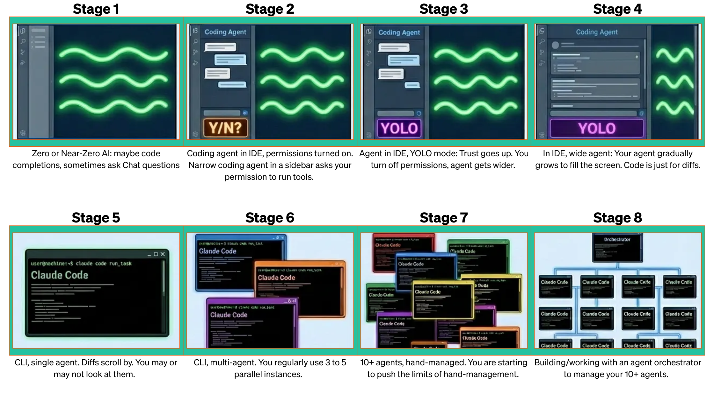
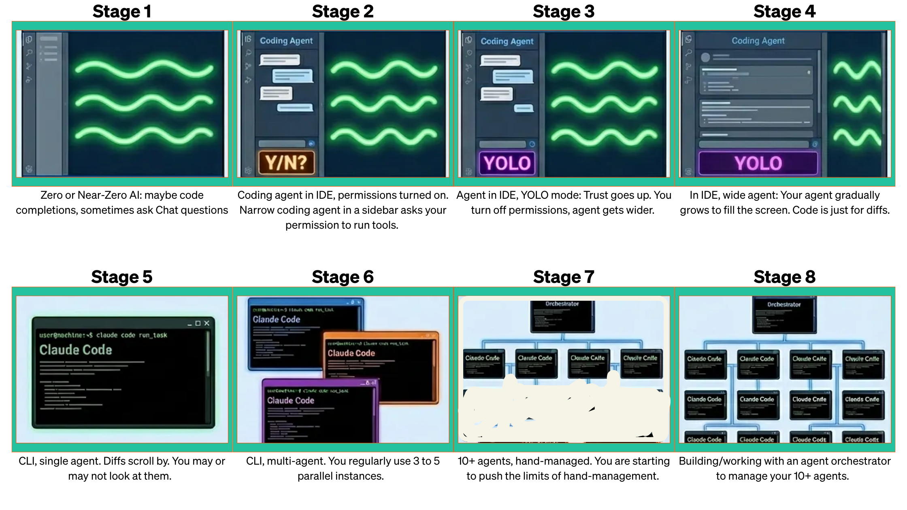
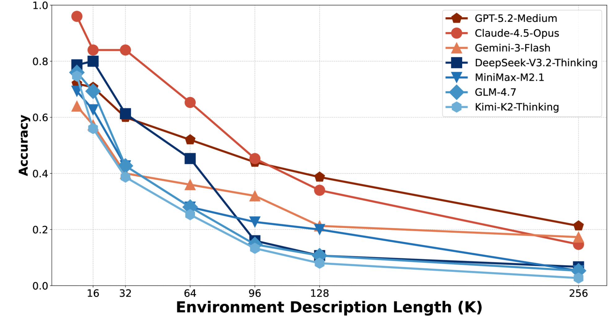
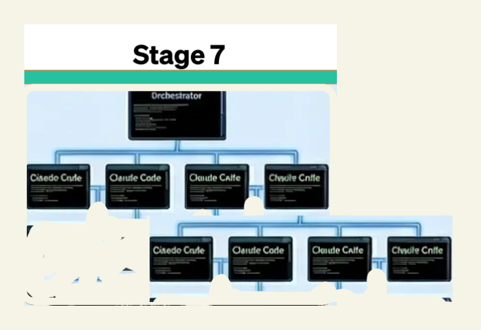

<!DOCTYPE html>
<html lang="ru">
<head>
  <meta charset="UTF-8">
  <meta name="viewport" content="width=device-width, initial-scale=1.0">
  <title>Строим команду ИИ-агентов</title>

  <link rel="preconnect" href="https://fonts.googleapis.com">
  <link rel="preconnect" href="https://fonts.gstatic.com" crossorigin>
  <link href="https://fonts.googleapis.com/css2?family=Syne:wght@600;700;800&family=Outfit:wght@300;400;500;600&family=IBM+Plex+Mono:ital,wght@0,400;0,500;1,400&display=swap" rel="stylesheet">

  <script src="https://cdn.tailwindcss.com"></script>
  <script>
    tailwind.config = {
      theme: {
        extend: {
          fontFamily: {
            display: ['Syne', 'sans-serif'],
            body: ['Outfit', 'sans-serif'],
            mono: ['IBM Plex Mono', 'monospace'],
          },
          colors: {
            bg: '#09090b',
            surface: '#18181b',
            border: '#27272a',
            accent: '#ef5a3c',
            muted: '#a1a1aa',
            dim: '#52525b',
          }
        }
      }
    }
  </script>

  <script crossorigin src="https://unpkg.com/react@18/umd/react.production.min.js"></script>
  <script crossorigin src="https://unpkg.com/react-dom@18/umd/react-dom.production.min.js"></script>
  <script src="https://unpkg.com/@babel/standalone/babel.min.js"></script>
  <script src="https://cdn.jsdelivr.net/npm/mermaid@10/dist/mermaid.min.js"></script>

  <style>
    * { margin: 0; padding: 0; box-sizing: border-box; }
    html, body, #root { width: 100vw; height: 100vh; overflow: hidden; background: #09090b; }
    body { font-family: 'Outfit', sans-serif; color: #fafafa; -webkit-font-smoothing: antialiased; }

    .slide-enter { animation: slideIn 0.35s cubic-bezier(0.16, 1, 0.3, 1) forwards; }
    @keyframes slideIn {
      from { opacity: 0; transform: translateY(8px); }
      to { opacity: 1; transform: translateY(0); }
    }

    .mermaid-container svg {
      max-width: 100%;
      max-height: 80vh;
      height: auto;
    }

    pre code {
      font-family: 'IBM Plex Mono', monospace;
      font-size: 0.95rem;
      line-height: 1.7;
    }

    table { border-collapse: collapse; }
    th, td { text-align: left; }

    ::selection { background: rgba(239, 90, 60, 0.3); }

    .accent-line {
      width: 48px;
      height: 3px;
      background: #ef5a3c;
      border-radius: 2px;
    }

    ul.slide-list > li {
      position: relative;
      padding-left: 1.5rem;
    }
    ul.slide-list > li::before {
      content: '';
      position: absolute;
      left: 0;
      top: 0.65em;
      width: 6px;
      height: 6px;
      border-radius: 50%;
      background: #ef5a3c;
    }

    ol.slide-ol > li {
      counter-increment: step;
      position: relative;
      padding-left: 2.5rem;
    }
    ol.slide-ol > li::before {
      content: counter(step);
      position: absolute;
      left: 0;
      top: 0;
      font-family: 'Syne', sans-serif;
      font-weight: 700;
      font-size: 1.1em;
      color: #ef5a3c;
    }
    ol.slide-ol { counter-reset: step; list-style: none; }

    @page {
      size: landscape;
      margin: 0;
    }
    @media print {
      html, body, #root { width: auto; height: auto; overflow: visible; background: #09090b !important; }
      body { -webkit-print-color-adjust: exact; print-color-adjust: exact; color-adjust: exact; }
      .screen-only { display: none !important; }
      .print-only { display: block !important; }
      .print-slide {
        width: 100vw;
        height: 100vh;
        page-break-after: always;
        break-after: page;
        overflow: hidden;
        background: #09090b !important;
      }
      .print-slide:last-child {
        page-break-after: avoid;
        break-after: avoid;
      }
    }
    @media screen {
      .print-only { display: none !important; }
    }
  </style>
</head>
<body>
  <div id="root"></div>

  <script type="text/babel">
    const { useState, useEffect, useRef, useCallback } = React;

    mermaid.initialize({
      startOnLoad: false,
      theme: 'base',
      themeVariables: {
        darkMode: true,
        background: 'transparent',
        primaryColor: '#1f1f23',
        primaryBorderColor: '#ef5a3c',
        primaryTextColor: '#fafafa',
        secondaryColor: '#18181b',
        secondaryBorderColor: '#3f3f46',
        secondaryTextColor: '#fafafa',
        tertiaryColor: '#18181b',
        tertiaryBorderColor: '#3f3f46',
        tertiaryTextColor: '#fafafa',
        lineColor: '#52525b',
        textColor: '#fafafa',
        mainBkg: '#1f1f23',
        nodeBorder: '#ef5a3c',
        clusterBkg: '#111114',
        clusterBorder: '#3f3f46',
        titleColor: '#fafafa',
        edgeLabelBackground: '#09090b',
        fontSize: '18px',
        fontFamily: 'Outfit, sans-serif',
      },
      flowchart: {
        curve: 'monotoneX',
        padding: 20,
        nodeSpacing: 25,
        rankSpacing: 35,
        htmlLabels: true,
        subGraphTitleMargin: { top: 10, bottom: 20 },
      }
    });

    function MermaidChart({ chart }) {
      const ref = useRef(null);

      useEffect(() => {
        const render = async () => {
          const id = 'mc-' + Math.random().toString(36).slice(2, 10);
          try {
            const { svg } = await mermaid.render(id, chart);
            if (ref.current) ref.current.innerHTML = svg;
          } catch (e) {
            console.error('Mermaid:', e);
          }
        };
        render();
      }, [chart]);

      return <div ref={ref} className="mermaid-container flex justify-center" />;
    }

    function Slide({ children, className = '' }) {
      return (
        <div className={`w-full h-full flex flex-col justify-center px-40 py-14 ${className}`}>
          {children}
        </div>
      );
    }

    function SlideTitle({ children, sub }) {
      return (
        <div className="flex flex-col items-center justify-center h-full text-center">
          <div className="accent-line mb-8" style={{ width: 64 }} />
          <h1 className="font-display text-6xl font-800 tracking-tight leading-tight max-w-4xl">
            {children}
          </h1>
          {sub && <p className="font-body text-xl mt-8 text-muted tracking-wide">{sub}</p>}
        </div>
      );
    }

    function H2({ children }) {
      return (
        <div className="mb-10">
          <h2 className="font-display text-5xl font-700 tracking-tight leading-tight">{children}</h2>
        </div>
      );
    }

    function H3({ children }) {
      return (
        <h3 className="font-display text-3xl font-700 tracking-tight mb-6">{children}</h3>
      );
    }

    function Img({ src, alt, caption, href }) {
      return (
        <div className="flex flex-col items-center justify-center h-full">
          
          {caption && (href
            ? <a href={href} target="_blank" rel="noopener noreferrer" className="mt-4 text-sm text-dim font-mono hover:text-accent transition-colors">{caption}</a>
            : <p className="mt-4 text-sm text-dim font-mono">{caption}</p>
          )}
        </div>
      );
    }

    function CodeBlock({ children, lang }) {
      return (
        <pre className="bg-surface border border-border rounded-lg px-6 py-5 overflow-x-auto">
          <code className="text-[#e4e4e7]">{children}</code>
        </pre>
      );
    }

    function Quote({ children, author }) {
      return (
        <div className="border-l-2 border-accent pl-6 py-2">
          <p className="font-body text-xl text-[#d4d4d8] italic leading-relaxed">{children}</p>
          {author && <p className="mt-3 text-sm text-dim font-mono">{author}</p>}
        </div>
      );
    }

    function TableWrap({ children }) {
      return (
        <div className="overflow-x-auto">
          <table className="w-full font-body text-lg">
            {children}
          </table>
        </div>
      );
    }

    const CHARTS = {
      flow: `flowchart TD
    A[Работа над презентацией] --> B
    B[Нужно проверить инфу про субагентов в Codex CLI] --> C
    subgraph C[Ресерч]
        direction TB
        R2[Чтение статей и документации] --> R3[Поиск исходного кода на GitHub]
        R3 --> R4[Обнаружение несостыковок]
        R4 --> R6[Составление отчёта]
    end
    C --> D[Продолжение работы над презентацией]`,

      twoTerminals: `flowchart TD
    subgraph T1["Основной агент"]
        A1[Работа над задачей] --> A2[Пишет задание в research.md]
        A2 --> A3["Ждёт результат..."]
        A3 --> A4[Читает результат из research.md]
        A4 --> A5[Действия после]
    end
    subgraph T2["Рисерч-агент"]
        B1[Читает задание из research.md] --> B3[Чтение статей и документации]
        B3 --> B4[Поиск исходного кода на GitHub]
        B4 --> B5[Обнаружение несостыковок]
        B5 --> B7[Составление отчёта]
        B7 --> B8[Пишет результат в research.md]
    end
    A2 -.->|research.md| B1
    B8 -.->|research.md| A4`,

      subagent: `flowchart TD
    A[Работа над задачей] --> B[Задание для рисерча]
    B --> C[Результаты рисерча]
    C --> D[Действия после]
    B -.->|spawn| R
    subgraph R["Субагент: рисерч"]
        direction TB
        R2[Чтение статей и документации] --> R3[Поиск исходного кода на GitHub]
        R3 --> R4[Обнаружение несостыковок]
        R4 --> R6[Составление отчёта]
    end
    R -.->|return| C`,
    };

    const slides = [
      // 0 — Placeholder (full-page image)
      () => (
        <div className="w-full h-full flex items-center justify-center bg-bg">
          
        </div>
      ),

      // 1 — About
      () => (
        <Slide>
          <H2>Николай Шейко</H2>
          <ul className="slide-list space-y-5 font-body text-2xl text-[#d4d4d8] leading-relaxed max-w-3xl">
            <li>AI Engineer в US HRTech</li>
            <li>Кастомные ИИ-инструменты для неайтишного бизнеса</li>
            <li>Обучаю команды использовать AI в разработке</li>
            <li>Организую AI-конференции <a href="https://entropy.talk" target="_blank" rel="noopener noreferrer" className="text-dim hover:text-accent transition-colors">(entropy.talk)</a></li>
            <li>Пишу в тг: <a href="https://t.me/ai_grably" target="_blank" rel="noopener noreferrer" className="text-accent font-mono text-xl hover:text-[#ff7a62] transition-colors">@ai_grably</a></li>
          </ul>
        </Slide>
      ),

      // 2 — AI coding journey
      () => (
        <Slide className="items-center">
          
        </Slide>
      ),

      // 3 — AI coding journey fixed
      () => (
        <Slide className="items-center">
          
        </Slide>
      ),

      // 4 — Общие тренды
      () => (
        <Slide>
          <H2>Общие тренды</H2>
          <ul className="slide-list space-y-6 font-body text-2xl text-[#d4d4d8] leading-relaxed max-w-4xl">
            <li>Переход от копайлота к ИИ-работникам, работающим автономно</li>
            <li>Разделение ролей</li>
            <li>
              <span className="text-accent font-600">Пруфы:</span>{' '}
              новые субагенты в Codex, параллельные агенты в Claude Code, Cursor, Agent Teams в Claude Code и Kimi
            </li>
          </ul>
        </Slide>
      ),

      // 5 — Практика
      () => (
        <Slide>
          <H2>Практика</H2>
          <p className="font-body text-2xl text-[#d4d4d8] leading-relaxed max-w-3xl">
            Нам нужно собрать данные про субагентов в Codex CLI.
            В процессе агент ищет исследования, читает документацию, собирает метрики и данные.
          </p>
          <div className="mt-12 flex items-center gap-3">
            <span className="inline-block w-2 h-2 rounded-full bg-accent animate-pulse" />
            <span className="font-mono text-base text-dim">demo</span>
          </div>
        </Slide>
      ),

      // 6 — Флоу работы (mermaid)
      () => (
        <Slide className="items-center text-center">
          <H3>Как выглядит флоу работы над презентацией</H3>
          <div className="flex-1 flex items-center justify-center" style={{ transform: 'scale(1.35)', transformOrigin: 'center center' }}>
            <MermaidChart chart={CHARTS.flow} />
          </div>
          <p className="font-body text-lg text-muted mt-6">
            Промежуточные шаги находятся в контексте агента
          </p>
        </Slide>
      ),

      // 7 — Проблема контекстного окна
      () => (
        <Slide>
          <H2>Проблема контекстного окна</H2>
          <div className="flex-1 flex items-stretch gap-0 mt-2">
            <div className="w-1/2 flex flex-col items-center justify-center">
              
              <a href="https://arxiv.org/abs/2502.05908" target="_blank" rel="noopener noreferrer" className="mt-3 text-sm text-dim font-mono hover:text-accent transition-colors">LOCA-bench, 08 Feb 2026</a>
            </div>
            <div className="w-1/2 flex flex-col items-center justify-center px-8">
              <Quote author="Anthropic">
                Контекст нужно рассматривать как ограниченный ресурс с убывающей предельной отдачей.
              </Quote>
            </div>
          </div>
        </Slide>
      ),

      // 8 — Lost in the Middle
      () => (
        <Slide>
          <H2>И ещё один важный факт</H2>
          <div className="flex-1 flex flex-col items-center justify-center">
            
            <a href="https://arxiv.org/abs/2307.03172" target="_blank" rel="noopener noreferrer" className="text-sm text-dim font-mono mt-3 hover:text-accent transition-colors">Lost in the Middle, 11 Oct 2025</a>
          </div>
        </Slide>
      ),

      // 9 — Решение 1: Два терминала
      () => (
        <Slide className="items-center text-center">
          <H3>Решение 1: Два независимых агента</H3>
          <p className="font-body text-lg text-muted mb-6">
            Запускаем два CLI параллельно. Синхронизация через MD-файл.
          </p>
          <div className="flex-1 flex items-center justify-center" style={{ transform: 'scale(1.5)', transformOrigin: 'center center' }}>
            <MermaidChart chart={CHARTS.twoTerminals} />
          </div>
          <p className="mt-4 font-body text-lg">
            <span className="text-accent font-600">Минусы:</span>{' '}
            <span className="text-muted">ручная работа, нужно следить за двумя окнами, копировать контекст</span>
          </p>
        </Slide>
      ),

      // 10 — Решение 2: Субагенты
      () => (
        <Slide className="items-center text-center">
          <H3>Решение 2: Субагенты</H3>
          <p className="font-body text-lg text-muted mb-6">
            Основной агент сам запускает рисерч в отдельном треде и получает только результат.
          </p>
          <div className="flex-1 flex items-center justify-center">
            <MermaidChart chart={CHARTS.subagent} />
          </div>
          <p className="mt-4 font-body text-lg">
            <span className="text-accent font-600">Плюсы:</span>{' '}
            <span className="text-muted">автоматизация, единый контекст, нет ручной синхронизации</span>
          </p>
        </Slide>
      ),

      // 11 — Subagent vs Subtask
      () => (
        <Slide>
          <H2>Subagent vs Subtask</H2>
          <TableWrap>
            <thead>
              <tr className="border-b border-border">
                <th className="py-4 pr-8 font-display font-700 text-xl w-40"></th>
                <th className="py-4 pr-8 font-display font-600 text-lg text-muted text-center">Выбор промпта</th>
                <th className="py-4 pr-8 font-display font-600 text-lg text-muted text-center">Выбор tools</th>
                <th className="py-4 pr-8 font-display font-600 text-lg text-muted text-center">Выбор permissions</th>
                <th className="py-4 pr-8 font-display font-600 text-lg text-muted text-center">Выбор model</th>
              </tr>
            </thead>
            <tbody className="text-[#d4d4d8]">
              <tr className="border-b border-border/50">
                <td className="py-5 pr-8 font-display font-700 text-accent">Subtask</td>
                <td className="py-5 pr-8 text-center text-2xl">❌</td>
                <td className="py-5 pr-8 text-center text-2xl">❌</td>
                <td className="py-5 pr-8 text-center text-2xl">❌</td>
                <td className="py-5 pr-8 text-center text-2xl">🟡*</td>
              </tr>
              <tr>
                <td className="py-5 pr-8 font-display font-700 text-accent">Subagent</td>
                <td className="py-5 pr-8 text-center text-2xl">✅</td>
                <td className="py-5 pr-8 text-center text-2xl">✅</td>
                <td className="py-5 pr-8 text-center text-2xl">✅</td>
                <td className="py-5 pr-8 text-center text-2xl">✅</td>
              </tr>
            </tbody>
          </TableWrap>
          <p className="mt-10 font-body text-xl">
            <span className="text-accent font-600">Важно:</span>{' '}
            <span className="text-[#d4d4d8]">чаще всего достаточно Subtask!</span>
          </p>
          <p className="mt-4 text-sm text-dim font-mono">* Только Claude Code позволяет передавать модель как параметр в Task</p>
        </Slide>
      ),

      // 12 — Skills > субагенты
      () => (
        <Slide>
          <H2>Почему с появлением Skills субагенты почти не нужны</H2>
          <p className="font-body text-xl text-muted mb-8 max-w-4xl">
            Субагенты = динамический промпт + тулы + subtask
          </p>
          <ul className="slide-list space-y-5 font-body text-2xl text-[#d4d4d8] leading-relaxed max-w-4xl">
            <li>Первая часть заменяется скиллами</li>
            <li>Тулы перестали быть проблемой — context rot пофикшен новой реализацией Claude Code и уходом от MCP к Skills</li>
          </ul>
          <div className="mt-12 bg-surface border border-border rounded-lg px-8 py-6 max-w-4xl">
            <p className="font-display font-700 text-lg text-accent mb-2">Вывод</p>
            <p className="font-body text-xl text-[#d4d4d8]">
              В большинстве случаев достаточно создать subtask с конкретным запросом на использование скилла.
            </p>
          </div>
        </Slide>
      ),

      // 12b — Subagent vs Subtask (с Skills)
      () => (
        <Slide>
          <H2>Subagent vs Subtask</H2>
          <TableWrap>
            <thead>
              <tr className="border-b border-border">
                <th className="py-4 pr-8 font-display font-700 text-xl w-40"></th>
                <th className="py-4 pr-8 font-display font-600 text-lg text-muted text-center">Выбор промпта</th>
                <th className="py-4 pr-8 font-display font-600 text-lg text-muted text-center">Выбор tools</th>
                <th className="py-4 pr-8 font-display font-600 text-lg text-muted text-center">Выбор permissions</th>
                <th className="py-4 pr-8 font-display font-600 text-lg text-muted text-center">Выбор model</th>
              </tr>
            </thead>
            <tbody className="text-[#d4d4d8]">
              <tr className="border-b border-border/50">
                <td className="py-5 pr-8 font-display font-700 text-accent">Subtask</td>
                <td className="py-5 pr-8 text-center text-2xl">Skills ✅</td>
                <td className="py-5 pr-8 text-center text-2xl">Skills ✅</td>
                <td className="py-5 pr-8 text-center text-2xl">❌</td>
                <td className="py-5 pr-8 text-center text-2xl">🟡*</td>
              </tr>
              <tr>
                <td className="py-5 pr-8 font-display font-700 text-accent">Subagent</td>
                <td className="py-5 pr-8 text-center text-2xl">✅</td>
                <td className="py-5 pr-8 text-center text-2xl">✅</td>
                <td className="py-5 pr-8 text-center text-2xl">✅</td>
                <td className="py-5 pr-8 text-center text-2xl">✅</td>
              </tr>
            </tbody>
          </TableWrap>
          <p className="mt-10 font-body text-xl">
            <span className="text-accent font-600">Важно:</span>{' '}
            <span className="text-[#d4d4d8]">чаще всего достаточно Subtask!</span>
          </p>
          <p className="mt-4 text-sm text-dim font-mono">* Только Claude Code позволяет передавать модель как параметр в Task</p>
        </Slide>
      ),

      // 13 — А где субагенты нужны
      () => (
        <Slide>
          <H2>А где всё-таки субагенты нужны?</H2>
          <p className="font-body text-2xl text-[#d4d4d8] mb-8 max-w-4xl leading-relaxed">
            Когда нужны <span className="text-accent font-600">кастомные Permissions</span>{' '}
            <span className="text-dim">(+ Model не в CC)</span>.
            Это не про инструменты, которые даём агенту, а про то, что ему запрещаем.
          </p>
          <H3>Примеры</H3>
          <ul className="slide-list space-y-5 font-body text-xl text-[#d4d4d8] max-w-4xl">
            <li>QA-агент с Playwright MCP</li>
            <li>Deep Research локальной моделью по приватным файлам</li>
            <li>Мультиагентная система с read-only оркестратором и исполнителями</li>
          </ul>
          <p className="mt-8 text-sm text-dim font-mono">* Только Claude Code позволяет передавать модель как параметр в Task</p>
        </Slide>
      ),

      // 14 — Субагент через Skills
      () => (
        <Slide>
          <H3>Слияние Skill и Subtask в Claude Code</H3>
          <p className="font-body text-lg text-muted mb-6">
            Добавляем <span className="font-mono text-accent">context: fork</span> в SKILL.md:
          </p>
          <div className="flex gap-8 items-start">
            <CodeBlock>{`---
name: deep-research
description: Research a topic thoroughly
context: fork
agent: Explore
---

Research $ARGUMENTS thoroughly...`}</CodeBlock>
            <div className="shrink-0">
              <TableWrap>
                <tbody className="text-lg text-[#d4d4d8]">
                  <tr className="border-b border-border/50">
                    <td className="py-3 pr-6 font-mono text-accent text-base">context: fork</td>
                    <td className="py-3">Замускает skill в отдельном таске</td>
                  </tr>
                  <tr className="border-b border-border/50">
                    <td className="py-3 pr-6 font-mono text-accent text-base">agent: Explore</td>
                    <td className="py-3">Read-only агент для поиска</td>
                  </tr>
                  <tr>
                    <td className="py-3 pr-6 font-mono text-accent text-base">allowed-tools</td>
                    <td className="py-3">Ограничить тулы</td>
                  </tr>
                </tbody>
              </TableWrap>
            </div>
          </div>
        </Slide>
      ),

      // 15 — Вложенные субагенты в OpenCode
      () => (
        <Slide>
          <div className="text-center">
            <H2>Вложенные субагенты в OpenCode</H2>
          </div>
          <div className="flex items-center justify-center h-[68vh]">
            
          </div>
        </Slide>
      ),

      // 14 — Ralph Wiggum
      () => (
        <Slide>
          <H2>Ralph Wiggum</H2>
          <CodeBlock>{`while :; do cat prompt.md | agent ; done`}</CodeBlock>
          <p className="font-body text-xl text-[#d4d4d8] mt-8 mb-8 max-w-3xl">
            Зацикливаем агента на автономную работу — наша задача стать тимлидом.
          </p>
          <H3>Способы</H3>
          <ol className="slide-ol space-y-4 font-body text-xl text-[#d4d4d8] max-w-4xl mb-8">
            <li>Через внешний скрипт</li>
            <li>Через агента-оркестратора — базовый агент как менеджер, который следит и сам пинает «сотрудников»</li>
          </ol>
          <div className="bg-surface border border-border rounded-lg px-8 py-5 max-w-3xl">
            <p className="font-display font-700 text-lg text-accent mb-1">Идея</p>
            <p className="font-body text-lg text-[#d4d4d8]">
              Забрать у себя возможность микроменеджить — ревьюим только итоговый результат.
            </p>
          </div>
        </Slide>
      ),

      // 15 — Feedback loops
      () => (
        <Slide>
          <H2>Без чего не заработает</H2>
          <H3>Качественные feedback loops</H3>
          <ul className="slide-list space-y-6 font-body text-2xl text-[#d4d4d8] leading-relaxed max-w-3xl">
            <li>Линтер</li>
            <li>Юнит-тесты</li>
            <li>e2e тесты <span className="text-muted">(Playwright / Chrome DevTools)</span></li>
          </ul>
        </Slide>
      ),

      // 16 — Роли в команде
      () => (
        <Slide>
          <H2>Как формировать роли в «команде»</H2>
          <p className="font-mono text-base text-dim mb-8">cursor.com/blog/scaling-agents</p>
          <ul className="slide-list space-y-6 font-body text-2xl text-[#d4d4d8] leading-relaxed max-w-4xl">
            <li><span className="text-accent font-600">Базовый минимум:</span> разделяем роль менеджера и исполнителя</li>
            <li><span className="text-accent font-600">Опционально:</span> добавляем ревьюера / тестировщика</li>
            <li><span className="text-accent font-600">Основной тейк:</span> не переусложнять</li>
          </ul>
        </Slide>
      ),

      // 17 — Как ревьюить
      () => (
        <Slide>
          <H2>Как ревьюить?</H2>
          <p className="font-body text-2xl text-[#d4d4d8] mb-10 max-w-4xl leading-relaxed">
            Так же как с людьми — ревьюим только PR, а не конкретные изменения или коммиты.
          </p>
          <ol className="slide-ol space-y-5 font-body text-xl text-[#d4d4d8] max-w-4xl">
            <li>
              Сначала ревьюим с помощью агента{' '}
              <span className="font-mono text-accent">/review</span>{' '}
              <span className="text-muted">(убирает bias имплементатора)</span>
            </li>
            <li>На практике это один из самых ROI-шных кейсов применения агентов на больших репо</li>
          </ol>
        </Slide>
      ),

      // 19 — Закон Галла + Правильный флоу
      () => (
        <Slide>
          <H2>Закон Галла</H2>
          <div className="mb-10">
            <Quote author="John Gall">
              Сложная система, которая работает, неизменно эволюционировала из простой системы, которая работала.
              Сложная система, разработанная с нуля, никогда не работает.
            </Quote>
          </div>
          <H3>Правильный флоу</H3>
          <ol className="slide-ol space-y-4 font-body text-xl text-[#d4d4d8] max-w-4xl">
            <li>Просто добавляем всё в единый <span className="font-mono text-accent">CLAUDE.md</span></li>
            <li>Постепенно выносим куски в отдельные Skills</li>
            <li>Вызываем сабтаски вручную (промптом), пока не выведем успешные паттерны</li>
            <li><span className="text-accent font-600">Только после этого</span> — выносить в отдельные субагенты</li>
          </ol>
          <p className="mt-8 font-body text-lg text-muted max-w-4xl">
            <span className="text-accent font-600">Главное:</span>{' '}
            качественный feedback loop и уход от микроменеджмента важнее субагентов.
          </p>
        </Slide>
      ),

      // 20 — Final
      () => (
        <div className="w-full h-full flex flex-col items-center justify-center text-center px-20">
          <H2>Николай Шейко | Строим команду ИИ-агентов</H2>
          <p className="font-body text-xl text-muted mb-10 max-w-3xl">
            Сравнение фичей сабагентов в Codex CLI, Claude Code, OpenCode
          </p>
          
          <a href="https://t.me/ai_grably" target="_blank" rel="noopener noreferrer" className="font-mono text-base text-accent hover:text-[#ff7a62] transition-colors">t.me/ai_grably</a>
        </div>
      ),
    ];

    function ProgressBar({ current, total }) {
      const pct = ((current + 1) / total) * 100;
      return (
        <div className="fixed bottom-0 left-0 w-full h-[2px] bg-border z-50">
          <div
            className="h-full bg-accent transition-all duration-500 ease-out"
            style={{ width: `${pct}%` }}
          />
        </div>
      );
    }

    function SlideCounter({ current, total }) {
      const num = String(current + 1).padStart(2, '0');
      const tot = String(total).padStart(2, '0');
      return (
        <div className="fixed bottom-5 right-8 font-mono text-sm text-dim z-50 select-none">
          {num}<span className="text-border mx-1">/</span>{tot}
        </div>
      );
    }

    function getInitialSlide() {
      const p = new URLSearchParams(window.location.search);
      const s = parseInt(p.get('slide'), 10);
      return (!isNaN(s) && s >= 0) ? s : 0;
    }

    function syncURL(n) {
      const url = new URL(window.location);
      url.searchParams.set('slide', n);
      window.history.replaceState(null, '', url);
    }

    function App() {
      const [current, setCurrent] = useState(getInitialSlide);
      const [animKey, setAnimKey] = useState(0);
      const total = slides.length;

      const go = useCallback((dir) => {
        setCurrent(prev => {
          const next = prev + dir;
          if (next < 0 || next >= total) return prev;
          syncURL(next);
          return next;
        });
        setAnimKey(k => k + 1);
      }, [total]);

      useEffect(() => {
        const onKey = (e) => {
          if (e.key === 'ArrowRight' || e.key === 'ArrowDown' || e.key === ' ' || e.key === 'PageDown') {
            e.preventDefault();
            go(1);
          }
          if (e.key === 'ArrowLeft' || e.key === 'ArrowUp' || e.key === 'PageUp') {
            e.preventDefault();
            go(-1);
          }
          if (e.key === 'Home') { setCurrent(0); syncURL(0); setAnimKey(k => k + 1); }
          if (e.key === 'End') { setCurrent(total - 1); syncURL(total - 1); setAnimKey(k => k + 1); }
        };
        window.addEventListener('keydown', onKey);
        return () => window.removeEventListener('keydown', onKey);
      }, [go, total]);

      useEffect(() => {
        let startX = 0;
        const onTouchStart = (e) => { startX = e.touches[0].clientX; };
        const onTouchEnd = (e) => {
          const diff = startX - e.changedTouches[0].clientX;
          if (Math.abs(diff) > 60) go(diff > 0 ? 1 : -1);
        };
        window.addEventListener('touchstart', onTouchStart, { passive: true });
        window.addEventListener('touchend', onTouchEnd, { passive: true });
        return () => {
          window.removeEventListener('touchstart', onTouchStart);
          window.removeEventListener('touchend', onTouchEnd);
        };
      }, [go]);

      const CurrentSlide = slides[current];

      return (
        <>
          <div className="relative w-screen h-screen bg-bg overflow-hidden screen-only">
            <div key={animKey} className="w-full h-full slide-enter">
              <CurrentSlide />
            </div>
            <ProgressBar current={current} total={total} />
            <SlideCounter current={current} total={total} />
          </div>
          <div className="print-only bg-bg">
            {slides.map((S, i) => (
              <div key={i} className="print-slide">
                <S />
              </div>
            ))}
          </div>
        </>
      );
    }

    ReactDOM.createRoot(document.getElementById('root')).render(<App />);
  </script>
</body>
</html>
